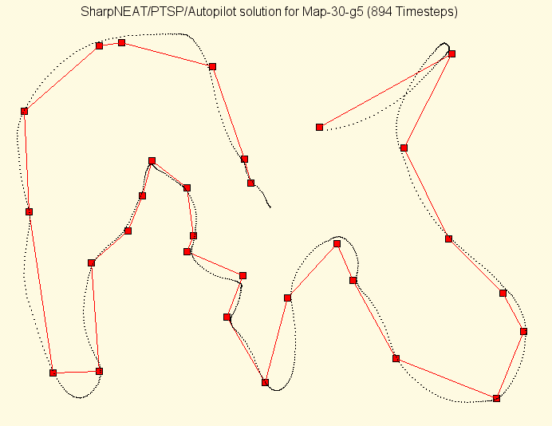
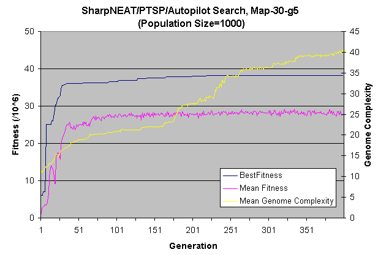

The Physical travelling Salesperson Problem (PTSP) was devised by Simon Lucas of Essex University primarily as the basis of a competition for GECCO 2005. The goal of the competition was to find techniques for solving PTSP and to find the best possible solution to a given instance of the problem consisting of a map with 30 points (to be referred to as Map-30-g5).
This is a brief, informal write-up of my investigations into the PTSP problem, and specifically how the neuro-evolution technique NEAT[1-5] was used to find solutions to the PTSP problem. This is not meant to be read as a formal academic paper, although for clarity I adopt that style to some degree.
Solutions to specific instances of the PTSP problem are in the form of a list of force vectors and as such the problem can most obviously be approached using a genetic algorithm to find the optimal list of vectors. However the problem is highly non-linear and so a good encoding for a genetic algorithm is not immediately obvious.
One approach is to divide the problem into two distinct problems, firstly to find an optimal or near-optimal route and then to find a list of vectors that follow that route. To find the optimal route we can then use a genetic algorithm similar to those devised for the TSP problem but with a modified heuristic that takes into account not only distance between points but also the sharpness of the angles in the route and their ability to preserve momentum in an agent following the route. The second problem can then be solved using a controller that is able navigate its way along a given route using sensory inputs consisting of the agent/salesperson's velocity and the relative distance and direction of points on the route, calculating the necessary output forces to follow the route as the salesperson progresses.
By decomposing the problem in this way we now have a linear optimization problem similar to the TSP problem with 30 points instead of a highly non-linear problem with an unknown number of force vectors, probably several hundred. Actually our new route finding problem does have some degree of non-linearity due to the fact that when sub-routes are joined together (as is performed in a genetic algorithm search) the fitness of each sub-route is partly dependent on the sub-routes it is joined to, e.g. if a join makes a sharp angle in the overall route then the fitness of the overall route is diminished. However even with this shortcoming the routes generated are all valid solutions, unlike a direct genetic algorithm search for a list of force vectors which would predominately generate invalid solutions.
Due to time constraints, at the time of writing I have no concrete implementation of a heuristic that is able to evaluate the quality of routes for PTSP. However one idea is to use a simplified version of newtonian physics to estimate the speed that could be achieved by an agent at each waypoint on the route, considering the maximum acceleration, the distance between points and the angles that must be traversed. This could probably be achieved using some form of spline function or another idea is to evaluate routes using a controller that is able to follow each route (as described below).
The second part of the described solution for PTSP requires a controller that is able to navigate the salesperson along a given route in an efficient manner. A controller must do this by outputting force vectors based upon knowledge of its current position, speed and the location of the waypoints it must pass. It should be possible to 'hand-code' an algorithm to do just this, but better results may be attained by evolving a controller. As such a neural network controller was evolved using SharpNEAT (an implementation of NEAT).
Experiments were performed for a number of different arrangements or models for the controller's inputs and outputs. By far the most effective i/o model discovered was to use six inputs and two outputs consisting of:
Inputs
Outputs
Input Signal Details
The scale factors applied to In0-In3 and In5 were chosen to scale the expected input values for the specific Map-30 problem into the approximate range of -1.0 to 1.0. Some values may be outside of this range, but this is considered acceptable for input signals because connections from input neurons can scale signals down and also up to some degree depending on the connection weight range defined in the neural networks being used, e.g. by default SharpNEAT defines a connection weight range of -5.0 to 5.0.
The angle(a0) applied to In4 is scaled to the range -1.0< a0 <=1.0, where negative angles correspond to left-hand turns and positive angles correspond to right-hand turns. +1.0 therefore corresponds to a 180° turn required at the next waypoint, which in turn can be interpreted by the controller as an indication to slow down on approach to the waypoint. Similarly In5 gives some indication of how much the controller should slow down on approaching the next waypoint, e.g. if the angle is 0.0 and In5 is large then the controller can pass through the waypoint without slowing. Note that this model may be improved upon by supplying knowledge of waypoints further into the route such as that supplied by the inputs In4 and In5.
Towards the end of the route signals for In4 and In5 cannot be calculated, therefore In4 is assigned a zero angle, and In5 is assigned a large value. These values indicate to the controller that it can accelerate through the last waypoint, but only if the evolved controller chooses to use these signals.
Output Signal Details
For the neuron activation function in use the output signal range is 0.0 to 1.0. For each of the two outputs this range was scaled and translated to -100.0 to 100.0. These two outputs then give a desired velocity for the agent in m/s in the X and Y axes. An extra piece of hard-coded logic now acts as the comparator of a servomechanism by comparing the desired X and Y velocities with the actual velocities and selecting an output vector based on the difference between them. A difference of less than 0.5m/s on both axes results in no force vector being applied, if both the X and Y differences are >=0.5 then the axis with the greater difference is selected as the recipient of the output force for that timestep. If the X and Y differences are equal and >=0.5 then the X-axis is given priority, this is an arbitrary selection since one or the other axis must be chosen. The decision to use an explicitly defined servomechanism is an important one and is discussed further below.
A new experiment was created within the SharpNEAT framework combining the PTSP world and physics model, the controller input/output model described above and a pre-determined route for the Map-30-g5 set of coordinates. The route used was hand picked and was in fact the optimal TSP solution starting from the point closest to the agent's starting point at the center of the PTSP world. This route was chosen because from sight it looked to be a reasonably good candidate and although it does contain some sharp turns it also contains some nice long gentle curves that pass through several points (figure 1).

Figure 1: The Map-30-g5 coordinates, the optimal TSP route(red) and the best SharpNEAT/PTSP controller's path through that route, starting from the center of the image (coords 160,120).
To evaluate candidate controllers they are each placed within the PTSP world and the PTSP simulation is run until one of the following stop conditions is met:
Once a stop condition is met the following fitness function is evaluated for controllers that didn't reach the last waypoint. This function primarily rewards the ability to follow the route, secondary goals are to get as close as possible to the next waypoint and to do so in the least amount of time possible:
fitness = (1,000,000 * WaypointsReached)
+ (200-TimestepAtLastWaypoint)
+ (10,000-ClosestApproachToNextWaypoint)
For controllers that reached the last waypoint the following function simply rewards ability to follow the route and as a secondary goal attempts to minimise the total amount of time spent to traverse the route in its entirety.
fitness = (1,000,000 * WaypointsReached)
+ 20,000 * (1500-TimestepAtLastWaypoint)
Several NEAT searches were initialised with a population of 1000 genomes and the minimum and maximum species count thresholds set to 20 and 30 respectively. SharpNEAT's default neuron activation function of y = 1 / (1+exp(-4.9*x)) was used. Using this set-up controllers that are able to traverse the entire length of Map-30-g5 are typically found within the first few generations. Often a solution is found within the first random population, this is possible because of the specific input/output model in use and this is discussed further below. The first successful controllers found typically traverse Map-30-g5 in a very inefficient manner, tracing loops around each target waypoint and taking up to the maximum of 2000 time steps permitted by the evaluation routine. Following an initial sharp performance improvement the improvement rate settles into a far more gradual climb(figure 2).

Figure 2. A typical SharpNEAT search for a PTSP controller. Population size is 1000, Min/Max species thresholds are 20 and 30 respectively. This run took just under 1 hour to perform 400 generations, with the generations/sec rate slowing as the mean genome complexity rose.
The graph in figure 2 shows that the best fitness achieved was 38,240,000, which equates to a controller traversing Map-30-g5 in 1,088 time steps. The best genome from this search was then used as the seed genome in a new population of size 150 and a new search run, this essentially focuses the search onto a smaller area of the problem search space. This second search improved the best controller's performance to the 894 time steps shown in figure 1 over a 12 hour period.
Controller Input/Output Model Discussion
A number of different models were tried for the controller before settling on the model described above. Each of these models was a combination of just a few input and output signal representation techniques. For the inputs three main variations were experimented with for inputting the velocity and distance information:
For the outputs these variations were attempted:
Another common idea in the arena of neuro-controllers is to define an ego-centric agent. An ego-centric agent can have its orientation adjusted within its environment in a manner suited to the task at hand, this often leads to a simplification of the overall problem to be solved from teh point of view of the neural networks being evolved, and thus a higher experimental success rate. For example, PTSP experiments were tried whereby the agent was always oriented with it's 'North' output pointing in the direction of travel. Of course the force vector outputs can only be in one of four fixed directions (North, East, South, West) and so the agent was actually oriented with its 'North' pointing in one of these four directions, whichever made the smallest angle with the direction of travel. This scheme therefore still requires a 'direction of travel' input, but now the value is essentially an offset from the forward direction of the agent and is always within the range of ±45°. The limited range of this input equates to a simplification of the problem, since a whole set of input signals where abs(direction)>45° no longer has to be handled.
Although the ego-centric model worked to some degree, its usefulness is severely limited by the agent's inability to orientate into anything but four fixed directions. The controller is still required to compare the offset angle with the direction of the next waypoint and to discretize its output to one of four output vectors. As such the best controllers that were found using polar coordinate inputs, ego-centric or otherwise, were only able to traverse the full Map-30-g5 route by relaxing the 'maximum time step' and 'distance from waypoint' stop conditions during simulation. The routes described by these controllers were highly erratic, performing loops and overshooting waypoints by large distances only to re-find them again after large detours.
A breakthrough in progress was made by switching to the 'desired-velocity' vector output. This essentially eliminates the need for the evolved artificial neural networks (ANN's) to compare the agent's current velocity vector and/or direction with a desired velocity/direction to determine an appropriate action. This functionality is now performed as part of the fitness function along with discretizing the requested velocity change into one of the five output force vectors. The remaining task for the ANN's is now a simplified one, in fact one very simple solution for a network is to connect the target distance X and Y inputs directly to the desired velocity X and Y outputs. With the connection weights providing an appropriate scaling such a network can in fact traverse Map-30-g5 simply by requesting to move faster towards the target when it is further away, and slower as it approaches. Clearly this simple strategy has been improved upon by the controller in figure 1 as it is seen to be holding a constant velocity through some of the waypoints where no sharp turn is required. However it is reasonable to assume that this simple strategy probably formed the basis of more complex strategies that lead to the solution in figure 1.
It is disappointing that NEAT was unable to find good solutions by evolving it's own the equivalent of the hard-coded servomechanism and discretizing logic that were ultimately required to follow a complex route. However this problem may be resolved by using an improved fitness function that tests networks against a range of different scenarios from the outset and averages their performance in each scenario to give a fitness value. In the experiments described fitness was evaluated by measuring progress on a single route, by doing this we risk leading the search into a local optima, where we find networks that are good at traversing the start of the route and which are subsequently not sufficiently generalised to traverse the remainder of the route. In fact this over-fitting/under-generalisation phenomenon was overtly obvious with some poorer networks because they would fail to follow even the start of the route if their initial starting position was shifted only marginally.
It is also worth noting that ANN approaches are, in general, more applicable to dealing with smooth, continuous input/outputs signals and problem spaces, and that the fixed output vectors in PTSP therefore add an extra level of difficulty that must be overcome, especially considering that it greatly limits the approach of using an ego-centric controller, a technique which has been shown to be useful on other types of problem where navigation in a 2D world was required[5]
Overall though performance of the best evolved controllers was good and about equal to the controllers evolved by MacCallum using genetic programming[6]. It should be noted though that McCallum's controllers were not given a fixed route to follow and therefore were also required to discover techniques for finding good routes. Coincidentally McCallum's best solution happened to follow a route very similar to the one described in figure 1, and so comparison of route traversal times is reasonable.
Future experiments could be tried with an improved fitness function that better evaluates ability to traverse different types of route from the outset. The PTSP problem itself could also be modified, a bug in the competition physics code effectively increased the simulation time resolution from 0.1 to 0.3 seconds. The waypoint intersection test also does not check if the agent passed through a waypoint between time steps, this issue coupled with the time resolution bug may hamper the ability to evolve good controllers, especially for routes that allow traversal at high speed where the chance of speeding past a waypoint without being registered is increased.
Some possible interesting variations on the PTSP model are the inclusion of a finite amount of fuel, the agent could lose fuel mass as it progresses and ultimately deplete its reserves. Also a degree of friction could be introduced, and/or a 3-dimensional world. These are elements that bring PTSP closer to real world problems such as microbes moving through a viscous medium.
Colin,
July, 2005
 Copyright 2005, 2011, 2016 Colin Green.
Copyright 2005, 2011, 2016 Colin Green.